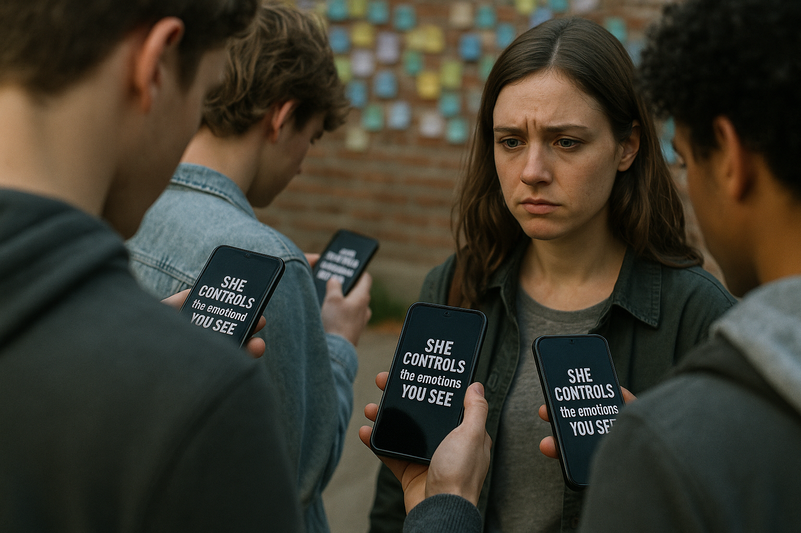

The note caught attention. Several students passing by paused to read it. The atmosphere around the wall
softened. Rose stood silently in front of the wall, watching this unexpected turn. The choice now rests in
her hands.
Rose steps forward and says gently, "If you really mean it, let's rebuild this space together."
Rose remains cautious. She stays silent but keeps observing Jack’s actions from a distance.
Rose confronted Jack to his face, "Don't think I don't know. Guiding public opinion on the Internet
is your favorite thing to do. How can I trust you?" Unless you take out your mobile phone to prove it to me